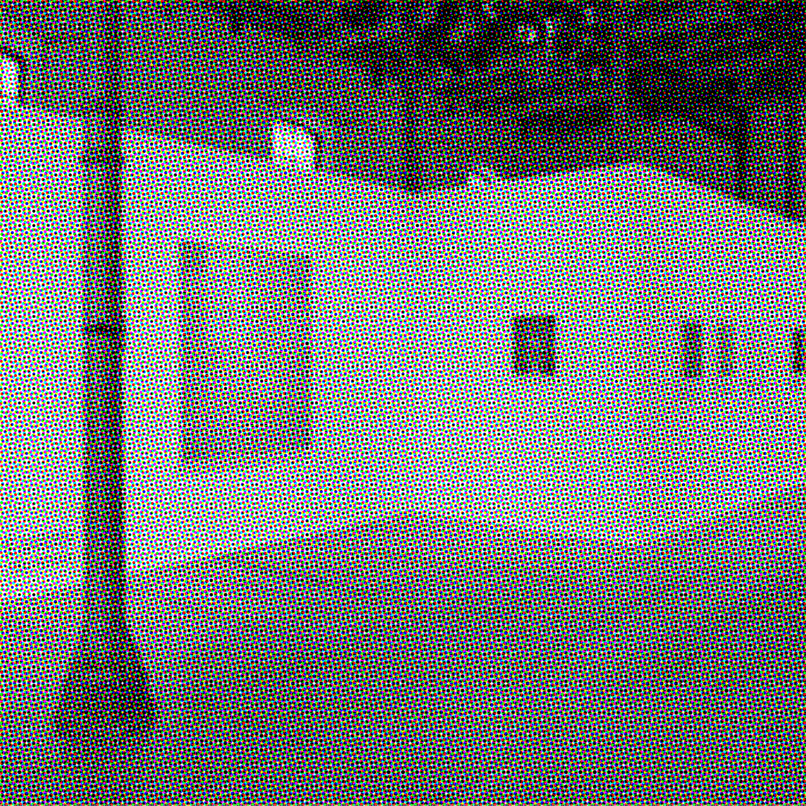

Om os
Studenternes Kunstforening Sjælland blev grundlagt i 1987 med ambitionen om at skabe et levende og inspirerende rum for kunst og kulturelle oplevelser på Sjælland.
Fra de første mindre udstillinger har stedet gennem årene udviklet sig til et kunstmuseum med en voksende samling og skiftende særudstillinger. Museet præsenterer værker fra forskellige perioder og kunstneriske retninger med fokus på både etablerede og nye kunstnere.
I dag danner museet ramme om mødet mellem kunst, historie og samtid. Gennem udstillinger, arrangementer og formidling ønsker vi at skabe rum for fordybelse, nysgerrighed og nye perspektiver – og give vores besøgende mulighed for at opleve kunsten på deres egen måde.
